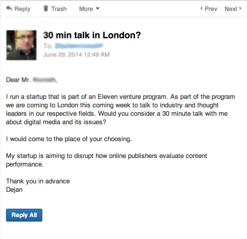

I pulled together some advice from Eastern European startups and investors, who’ve made the same first-journey to London.
SERENDIPITY
“Do you have to be connected in that other country? Not necessarily. You can start getting to know people little by little and you have to be pro-active about it,” Vesselina, Community Manager at the Eleven accelerator, and formerly partnership manager at Telerik explained to a group of 30 founders. She is a self-proclaimed social broker and community builder. It could be on the premises of just getting to know someone similar values with, rather than being too orchestrative about it. Investing time in getting to know an organisation or a person, without looking for the immediate quid pro quo is the way to go. Just get to know people, interact with them in the manner you do with friends and leave the rest to chance. “Leveraging this sort of serendipity and randomness is what creates the relations we need, international or national,” Vesselina continues.
But it will never happen if you do not get to know the person really well. One of the greatest things you can do with relations such as that is “to pay some social capital forward” — connect them with someone you believe they should know and talk with. That would ultimately create the non transactional nature of your relationship and build the deeper trust.
LISTS
How do you find those people though? “I have always had this mental picture of the people and organisations I wanted to work with so I started making a list of them. At any point I can give you a list of twenty people I have never been in contact with but would love to work with,” Max Gurvits, investor at Teres Capital, says.
The trick for him lies a lot less on chance and a lot more on a thorough investigation about the people that could be helpful. It is easy coming up with one, two or even three but what about twenty or a hundred potential connections. It takes research and knowing what you want, which usually proves helpful in itself. “People constantly ask me for a connection with someone without specifying why or of what good that connection would be to them. I usually reply saying: how about you send me a list other people that could be as good, and quickly describe why you need to know each of those people.”
He wants them to do the mental exercise and leap to realize just how many people are hidden in Linkedin, Crunchbase, or alumni groups. All they have to do is look rather than rely on the obvious choices. Probabilistically, this larger amount of people also increases the chances of a connection actually happening and being helpful.
Max encourages startups to invest a few hours in research, making a list of 100 desired connections. Some startups here are starting to call this the Max 100. (Update: he explained it in more detail here.)
BEING EQUAL
Not knowing people is nothing to be afraid of, both Vesselina and Max would agree on.
Lino Velev, director of Obecto, a software development company, starts on the outskirts of a certain social groups. For him, getting to the core through the weaker connections is more practical than going straight for the big fish.
For one, selling yourself or your business to someone is only possible if you put yourself on the same level as the other person. The weaker connections, the people standing at the edges, are easier to talk to and easier to impress.
Boyan Benev, learned the importance of equal terms early on in his real estate career. He now has a few startups behind him and is a national TV personality. “If you put yourself as an inferior, you effectively are saying ‘Hey I am different from you.’ People are very good at sensing that and, with the neediness that you exude, they would subconsciously judge you more harshly. We are in fact all the same, entrepreneurs, investors and venture capitalists and we should feel equal with each other all the time.”
Telling the weaker links the right kind of story nonchalantly can transport you to the heart of the desired social network much faster, as Lino, one of the curators of Leancamp, has learned not that long ago in Ireland.
What should your story be? “It should be something interesting and worth retelling,” Lino says. Instead of telling people about your product, tell them a story that they can later tell to someone else referencing you. To create stories like that the easier thing would be to create interesting things about yourself — help people figure out how to present themselves in 160 characters as Vesselina does with ShortBio or build an installation in -38 degrees, as Damjan Obal of EdgarTells did in Finland.
An example from a Bulgarian making his way into London:
For example, Dejan from Content360 recently took a trip to London to find some high-profile customers. Before leaving, he reached out on LinkedIn.
He asserted his credibility. He name-dropped his accelerator. He made himself understood quickly. He didn’t oversell. And he made it easy for them to say yes. He was clearly there for business, not as a “startup tourist.”
To seal the deal, he directly stated what his startup is trying to do – fix a known, key problem that matters in his industry. He framed this around the customers concerns.
The result – 50% conversion rate for meetings he asked for, and yet another Sofia startup on the international radar! All he had to do was ask in the right way. (For more on this, see How To Not Suck At Intros)